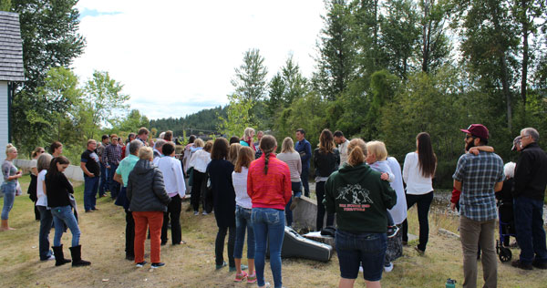
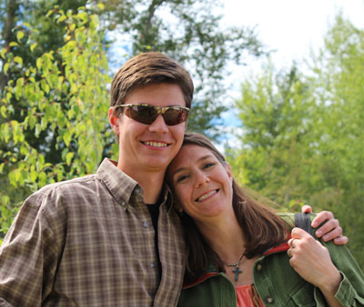
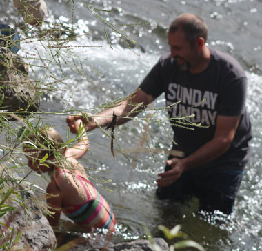
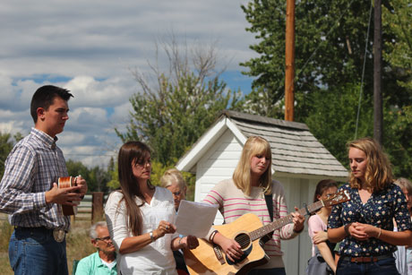
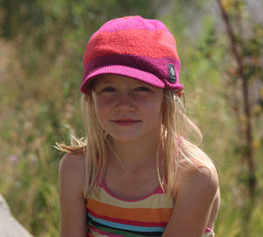
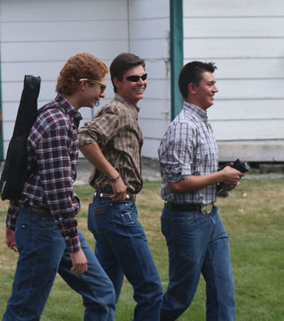

September 4, 2016
| One of our precious young ones in the church,
Cora, wanted to be baptized this summer so our church had an afternoon of
fellowship to celebrate this wonderful event. We gathered at the
historical village for lunch, singing, prayer, the baptism, and
celebration. It was a beautiful day full of good times. |
|
 |
 |
| Momma Susan is so happy to see her boy JJ, he has been in the mission field all summer | |
 |
 |
| I wasn't quick enough to catch the actual baptism. The water is so cold here, they don't mess around for long! |
Lovely music shared after the baptism |
 |
 |
| Speaking of lovely, here's Cora now. | The three oldest Stark boys, together again - watch out world! |